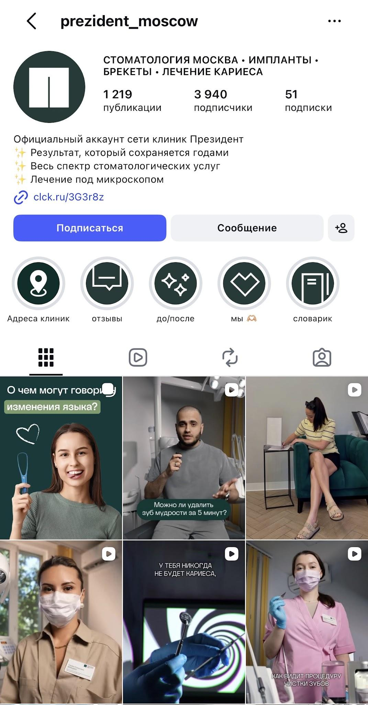

Сильные исходники
Есть врачи в кадре, клинические сюжеты, несколько направлений и материалы из жизни сети.
Для сети клиник «ПрезиДЕНТ»: приводим сильный экспертный контент в систему и связываем публикации с понятным путём пациента к записи.

В каналах присутствуют экспертные видео, подкасты, отзывы, результаты лечения и знакомство с клиниками. Потенциал теряется там, где материалы не складываются в историю: вопрос пациента → решение врача → пример → запись.
Есть врачи в кадре, клинические сюжеты, несколько направлений и материалы из жизни сети.
Экспертные ответы, анонсы, развлекательные ролики и предложения выходят по отдельности. Новому человеку сложнее увидеть продолжение темы.
Контенту полезно чаще объяснять выбор филиала и врача, содержание первого приёма и способ обратиться по конкретному запросу.
Выводы основаны на предоставленном аудите и повторной проверке открытых страниц. Эффективность контента по обращениям и записям требует внутренней аналитики клиники.
Снимки можно увеличить. Для каждой площадки показываем наблюдение и конкретное действие.
В шапке есть опыт, качество и ссылки на запись. В ленте — видео и переходы на другие площадки.
Предлагаем: давать короткий ответ врача прямо в публикации, а длинный выпуск оставлять продолжением. Для каждого поста выбирать главное действие.
Открыть канал ↗Фирменный стиль узнаваем. Общая обложка говорит об улыбке, но мало помогает выбрать врача, филиал или услугу.
Предлагаем: проверить меню и закреп глазами нового посетителя, разложить видео и кейсы по направлениям.
Открыть сообщество ↗В исходном аудите видны экспертные ролики, оформление и актуальные разделы. Повторная открытая проверка ограничена окном регистрации.
Предлагаем: обновить три опорных закрепа, навигацию в сторис и серии «вопрос → врач → случай».
Открыть профиль ↗Канал существует; полная лента из открытого веб-превью недоступна для оценки.
Предлагаем: определить роль MAX в плане, адаптировать полезные материалы и проверить частоту публикаций после доступа к ленте.
Открыть канал ↗Официальный профиль сети по открытым источникам не подтверждён. До запуска нужно проверить имя и доступ.
Предлагаем: короткие ответы врачей, вопросы для обсуждения и понятную ссылку на запись; не механическое копирование длинных постов.
Клинический случай превращается в последовательность материалов. В каждом появляется новая информация, а не копия одного текста.
«Можно ли сохранить этот зуб?»
Что выяснили на осмотре и диагностике.
Варианты, выбранный план и результат — с согласия пациента.
Как проходит консультация по этому запросу.
Короткие ответы, разбор снимков, объяснение выбора плана и работы нескольких специалистов.
Рубрика: «Почему выбрали именно этот план?»
Истории лечения, подготовка к первому приёму, работа команды, сервис и сопровождение.
Рубрика: «Что происходит после консультации?»
Что входит в услугу, где она доступна, как выбрать специалиста и из чего складывается стоимость.
Рубрика: «С чего начать, если откладывали лечение?»
Сравниваем приёмы подачи, а не эффективность по записям. Примеры помогают увидеть, как можно раскрывать экспертизу, процесс лечения и путь пациента.
Вопросы аудитории становятся поводом для конкретного ответа врача.
Смотреть источник ↗Результат сопровождается пояснением метода и указанием специалиста.
Смотреть источник ↗Показаны исходная ситуация и вопрос, который волнует пациента.
Смотреть профиль ↗Видимые входы к врачам, услугам, работам и онлайн-сервисам.
Смотреть сайт ↗Описание, преимущества и две записи.
Тема врача и несколько путей обращения.
Оформление, навигация и сервисные разделы.
Пример из предоставленного аудита.
Открытая проверка ограничена регистрацией.
Врач и повторяемая тема.
Узнаваемый формат подачи.
Небольшой вход в тему для подписчика.
Путь к работам, врачам и записи.
Клинический случай в повествовании.
История пациента раскрыта в серии материалов.
Открытая веб-версия канала.
Примеры приведены как иллюстрации приёмов подачи. Снимки из исходного аудита и открытых страниц показывают разные моменты просмотра.
Во всех вариантах: Telegram, MAX, ВКонтакте, Instagram и Threads, общий контент-план, адаптация, публикации после согласования, базовая модерация и отчёт за месяц.
Как считаем объём. Один сюжет адаптируется под несколько площадок. Цифры не означают пять отдельных съёмок или пять оригинальных текстов на одну тему. Комплектация тарифов предложена для согласования.
Отдельно. Съёмки, рекламный бюджет и платные размещения согласуем дополнительно. Медицинские случаи и материалы с блогерами публикуются после согласования с клиникой и при наличии необходимых разрешений.
Предлагаем первый месяц на тарифе 121 000 ₽: хватит объёма для нескольких последовательных серий. Дальше решения принимаем по данным площадок и обращениям.
Приоритетные направления, филиалы, врачи, роль каждой площадки и доступы.
Темы, сценарии, вопросы врачам, оформление, материалы для кейсов и график блогерских размещений.
Сверим данные соцсетей, переходы, обращения и доступную статистику записи.
Выберем направления и специалистов для первых серий, затем утвердим тариф, материалы и порядок согласования публикаций.